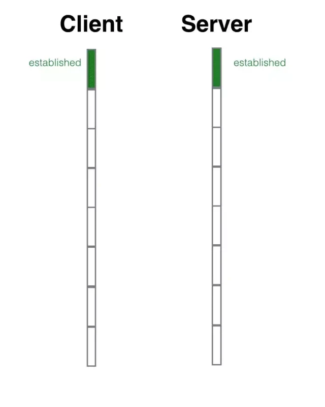
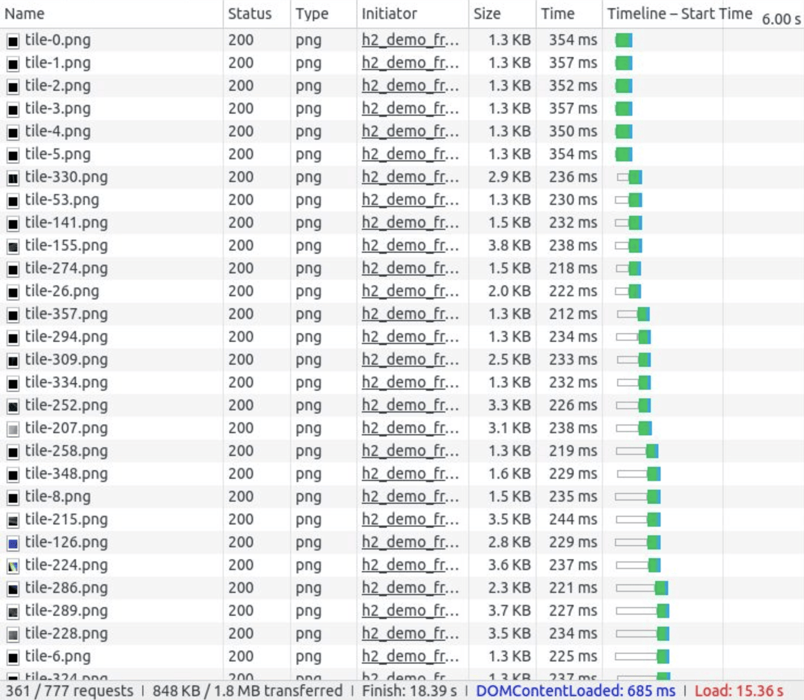
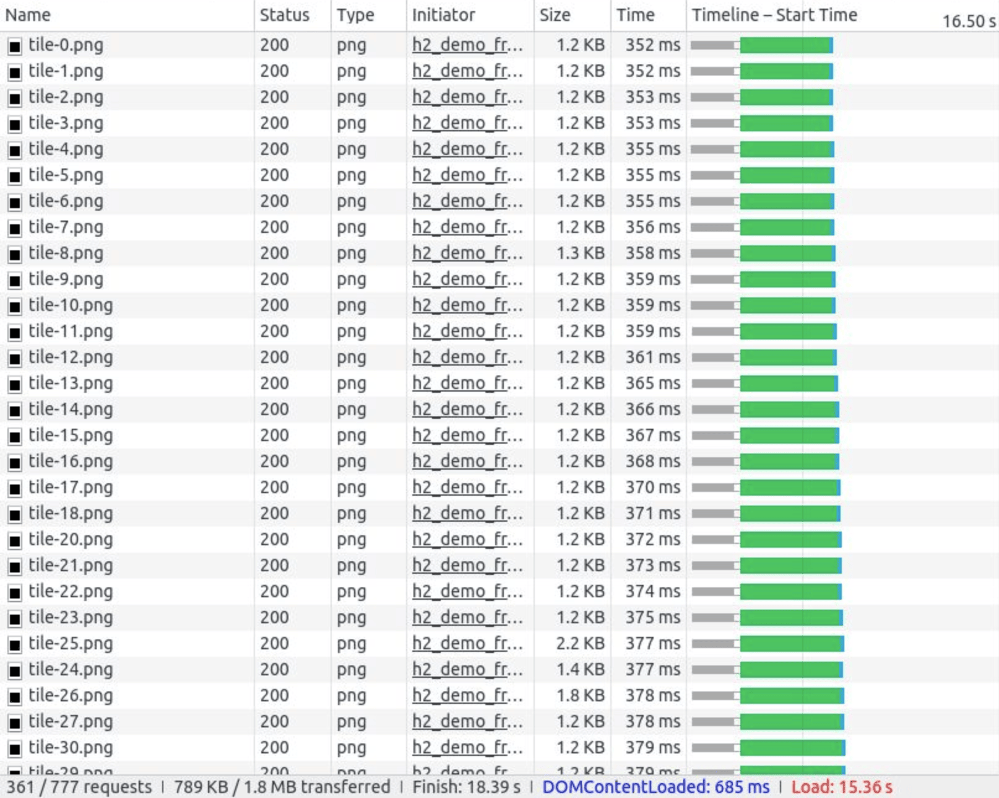
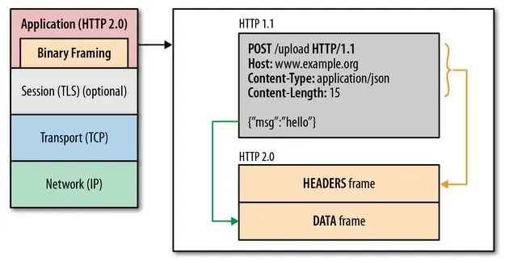
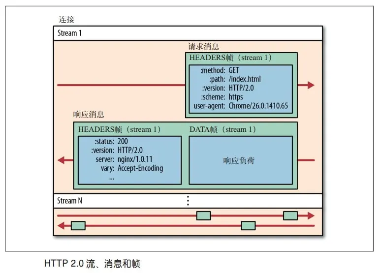
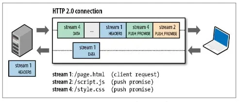

HTTP 与 TCP/IP
HTTP（Hypertext Transfer Protocol）是以 TCP/IP（Transmission Control Protocol/Internet Protocol）协议族为基础的，属于 TCP/IP 内部的一个子集；TCP/IP 协议族按层次分别分：
- 应用层，预存了各类通用的应用服务（比如：FTP、DNS、ARP），HTTP 也处于该层；
- 传输层，提供处于网络连接中的两台计算机之间的数据传输；
- 网络层，负责数据包的产生以及 IP 数据包在逻辑网络上的路由转发；
- 数据链路层，处理连接网络的硬件部分。

利用 TCP/IP 进行网络通信时，会通过分层顺序与对方进行通信；发送端从应用层往下走，接收端则从链路层往上走；发送端在层与层之间传输数据时，每经过一层时必定会被打上一个该层所属的首部信息；反之，接收端在层与层传输数据时，每经过一层时会把对应的首部消去。

IP、TCP 与 DNS
IP 网际协议位于网络层，用于把各种数据包传送给对方；要保证数据传送到对方那里，需要满足两个重要的条件：IP 地址和 MAC 地址（Media Access Control Address 媒体访问控制地址）；互联网中每一个资源都由 IP 地址唯一标识（IP 协议内容），一切网络设备都由 MAC 地址唯一标识。
IP 间的通信依赖 MAC 地址，通信双方通常是经过多台计算机和网络设备中转才能连接到对方；而在进行中转时，会利用下一站中转设备的 MAC 地址来搜索下一个中转目标；这时，会采用 ARP 协议（Address Resolution Protocol 地址解析协议是一个通过解析网络层地址来找寻数据链路层地址的网络传输协议），根据通信方的 IP 地址就反查出对应的 MAC 地址。

TCP 位于传输层，在发送数据前，通信双方必须在彼此间建立一条连接；为了方便传输，TCP 字节流服务会将大块数据分割成以报文段为单位的数据包进行管理；为了准确无误地将数据送达目标处，TCP 协议采用了三次握手四次挥手策略。
客户端和服务端通信前要进行连接，“三次握手”的作用就是双方都能明确自己和对方的收发能力是正常的（握手的过程会确认协议类型、协议版本、编码方式、传输速率等）：
- 第一次握手：客户端发送网络包，服务端收到了；这样服务端就能得出结论：客户端的发送能力、服务端的接收能力是正常的；
- 第二次握手：服务端发包，客户端收到了；这样客户端就能得出结论：服务端的接收、发送能力，客户端的接收、发送能力是正常的；
- 第三次握手：客户端发包，服务端收到了；这样服务端就能得出结论：客户端的接收、发送能力，服务端的发送、接收能力是正常的。

特别的，HTTPS 的连接建立需要七次握手，在 TCP 三次握手建立连接后，使用 TLS 握手建立安全连接（协商加密算法、加密密钥等）；HTTP/3 使用基于 UDP 的 QUIC 协议进行握手，将 TCP 和 TLS 握手过程结合起来，握手次数从七次减少到了三次。
TCP 断开链接的过程和建立链接的过程比较类似，只不过中间的两部并不总是会合成一步走，所以它分成了 4 个动作；之所以中间的两个动作没有合并，是因为 TCP 存在「半关闭」状态，也就是单向关闭。
上面有一个非常特殊的状态 time_wait，它是主动关闭的一方在回复完对方的挥手后进入的一个长期状态，这个状态标准的持续时间是 4 分钟，4 分钟后才会进入到 closed 状态，释放套接字资源。
DNS（Domain Name System）服务是和 HTTP 协议一样位于应用层的协议；它提供域名到 IP 地址之间的解析服务。

URI 与 URL
URI（统一资源标志符）就像是人的身份证号，可以把人独一无二地表示出来；URL（统一资源定位符）就像是人的居住地址，我们也可以通过住址找到这个人；不论是用定位的方式还是用编号的方式，我们都可以唯一确定一个人，都是 URI 的一种实现，而 URL 就是用定位的方式实现的 URI。
HTTP 协议
HTTP 协议和 TCP/IP 协议族内的其他众多的协议相同，用于客户端和服务器之间的通信；请求访问文本或图像等资源的一端称为客户端，而提供资源响应的一端称为服务器端。


HTTP 是一种无状态协议，自身不对请求和响应之间的通信状态进行保存；也就是说 HTTP 对于发送过的请求或响应都不做持久化处理。cookie 技术通过在请求和响应报文中写入 cookie 信息来控制客户端的状态；cookie 会根据从服务器端发送的响应报文内的一个叫做 Set-Cookie 的首部字段信息，通知客户端保存 cookie；当下次客户端再往该服务器发送请求时，客户端会自动在请求报文中加入 cookie 值后发送出去；服务器端发现客户端发送过来的 cookie 后，会去检查究竟是从哪一个客户端发来的连接请求，然后对比服务器上的记录，最后得到之前的状态信息。
HTTP 报文
用于 HTTP 协议交互的信息被称为 HTTP 报文；请求端的 HTTP 报文叫做请求报文，响应端的叫做响应报文；HTTP 报文本身是由多行（用 CR+LF 作换行符）数据构成的字符串文本；HTTP 报文大致可分为报文首部和报文主体两块。


HTTP 状态码
状态码的职责是当客户端向服务器端发送请求时，描述返回的请求结果。


- 200 表示从客户端发来的请求在服务器端被正常处理了；
- 201 表示资源已创建，服务器已确认；
- 204 代表服务器接收的请求已成功处理，但在返回的响应报文中不含实体的主体部分；
- 205 与 204 的区别是“要求请求方内容重置”；
- 206 表示客户端进行了范围请求，而服务器成功执行了这部分请求；响应报文中包含由 Content-Range 指定范围的实体内容；
- 301 永久性重定向，表示请求的资源已被分配了新的 URI，以后应使用资源现在所指的 URI；默认情况下，永久重定向是会被浏览器缓存的；
- 302 临时性重定向，表示请求的资源已被分配了新的 URI，希望用户（本次）能使用新的 URI 访问；
- 303 表示由于请求对应的资源存在着另一个 URI，应使用 GET 方法定向获取请求的资源（与 302 的区别）；
- 304 表示服务器端资源未改变，可直接使用客户端未过期的缓存；
- 307 和 302 相似，唯一的区别是不允许将请求方法从 POST 改为 GET；
- 308 永久性重定向，和 301 相似，唯一的区别是不允许将请求方法从 POST 改为 GET；
- 400 表示请求报文中存在语法错误；
- 401 表示发送的请求需要有通过 HTTP 认证信息；
- 403 表明对请求资源的访问被服务器拒绝了；
- 404 表明服务器上无法找到请求的资源；
- 429 表明在一定的时间内发送了太多的请求，超出了“频次限制”；
- 500 表明服务器端在执行请求时发生了错误；
- 502 表示服务器作为网关或代理，从上游服务器收到无效响应；
- 503 表明服务器暂时处于超负载或正在进行停机维护，现在无法处理请求；
- 504 表明网关超时。
HTTP 与服务器
HTTP/1.1 规范允许一台 HTTP 服务器搭建多个 Web 站点，可以用一台服务器为多位客户服务，也可以以每位客户持有的域名运行各自不同的网站。

在互联网上，域名通过 DNS 服务映射到 IP 地址；当请求发送到服务器时，已经是以 IP 地址形式访问了；在相同的 IP 地址下，由于虚拟主机可以寄存多个不同主机名和域名的 Web 网站，因此在发送 HTTP 请求时，必须在 Host 首部内完整指定主机名或域名的 URI。

HTTP 通信时，除客户端和服务器以外，还有一些用于通信数据转发的应用程序，例如代理、网关和隧道…
- 代理：有转发功能的应用程序，位于服务器和客户端“中间人”的角色，接收由客户端发送的请求并转发给服务器，同时也接收服务器返回的响应并转发给客户端；
- 网关：转发其他服务器通信数据的服务器，接收从客户端发送来的请求时，它就像自己拥有资源的源服务器一样对请求进行处理；
- 隧道：在相隔甚远的客户端和服务器两者之间进行中转，并保持双方通信连接的应用程序。
代理服务器的基本行为就是接收客户端发送的请求后转发给其他服务器；代理不改变请求 URI，会直接发送给前方持有资源的目标服务器。

在 HTTP 通信过程中，可级联多台代理服务器；请求和响应的转发会经过数台类似锁链一样连接起来的代理服务器。转发时，需要附加 Via 首部字段以标记出经过的主机信息。

使用代理服务器的理由有：利用缓存技术减少网络带宽的流量（缓存代理）、组织内部针对特定网站的访问控制、获取访问日志、透明代理…
网关的工作机制和代理十分相似；而网关能使通信线路上的服务器提供非 HTTP 协议服务；利用网关能提高通信的安全性，因为可以在客户端与网关之间的通信线路上加密以确保连接的安全。

隧道可按要求建立起一条与其他服务器的通信线路，使用 SSL 等加密手段进行通信；隧道的目的是确保客户端能与服务器进行安全的通信；隧道本身不会去解析 HTTP 请求。隧道会在通信双方断开连接时结束。

HTTP 首部
在请求中，HTTP 报文由方法、URI、HTTP 版本、HTTP 首部字段等部分构成。


在响应中，HTTP 报文由 HTTP 版本、状态码（数字和原因短语）、HTTP 首部字段 3 部分构成。


通用首部字段：
- Cache-Control 用来操作缓存的工作机制；
- Connection 用来控制不再转发给代理的首部字段、管理持久连接；HTTP/1.x 默认使用持久连接；
- Date 表明创建 HTTP 报文的日期和时间；
- Pragma 历史遗留字段，仅为向后兼容而定义；
- Trailer 事先说明在报文主体后记录了哪些首部字段；
- Transfer-Encoding 规定了传输报文主体时采用的编码方式；
- Upgrade 用于检测 HTTP 协议及其他协议是否可使用更高的版本进行通信，其参数值可以用来指定一个完全不同的通信协议；
- Via 用于追踪客户端与服务器之间的请求和响应报文的传输路径；
- Warning 用于告知用户一些与缓存相关的问题的警告。
请求首部字段：
- Accept 可通知服务器，用户代理能够处理的媒体类型及媒体类型的相对优先级；
- Accept-Charset 用来通知服务器用户代理支持的字符集及字符集的相对优先顺序；
- Accept-Encoding 用来告知服务器用户代理支持的内容编码及内容编码的优先级顺序；
- Accept-Language 用来告知服务器用户代理能够处理的自然语言集（指中文或英文等），以及自然语言集的相对优先级；
- Authorization 用来告知服务器用户代理的认证信息（证书值）；
- Expect 用来告知服务器，期望出现的某种特定行为；
- From 用来告知服务器，使用用户代理的用户的电子邮件地址；
- Host 使用首部字段 Host 加以区分运行在同一个 IP 上的虚拟主机；
- If-Match 只有当字段值跟 ETag（实体标记）值匹配一致时，服务器才会接受请求；
- If-None-Match 只有当字段值与 ETag 值不一致时，服务器才会接受请求；
- If-Modified-Since 字段指定的日期时间后，资源发生了更新，服务器会接受请求；
- If-Unmodified-Since 字段指定的日期时间后，资源未发生更新，服务器会接受请求；
- If-Range 若指定的字段值（ETag 或者时间）和请求资源的 ETag 值或时间相一致时，则作为范围请求处理；反之，则返回全体资源；
- Max-Forwards 以十进制整数形式指定可经过的服务器最大数目，当服务器接收到 Max-Forwards 值为 0 的请求时，则不再进行转发，而是直接返回响应；
- Proxy-Authorization 接收到从代理服务器发来的认证质询时，客户端会发送包含首部字段 Proxy-Authorization 的请求，以告知服务器认证所需要的信息；
- Range 对于只需获取部分资源的范围请求，包含首部字段 Range 即可告知服务器资源的指定范围；
- Referer 用来告知服务器请求的原始资源的 URI；
- TE 用来告知服务器客户端能够处理响应的传输编码方式及相对优先级；它和首部字段 Accept-Encoding 的功能很相像，但是用于传输编码；
- User-Agent 将创建请求的浏览器和用户代理名称等信息传达给服务器。
响应首部字段：
- Accept-Ranges 用来告知客户端服务器是否能处理范围请求，以指定获取服务器端某个部分的资源；
- Age 用来告知客户端，源服务器在多久前创建了响应；字段值的单位为秒；
- ETag 可将资源以字符串形式做唯一性标识的方式；服务器会为每份资源分配对应的 ETag 值；当资源更新时，ETag 值也需要更新；生成 ETag 值时，并没有统一的算法规则，而仅仅是由服务器来分配；
- Location 将响应接收方引导至某个与请求 URI 位置不同的资源；该字段会配合 3xx 的响应，提供重定向的 URI；
- Proxy-Authenticate 由代理服务器所要求的认证信息发送给客户端；
- Retry-After 用来告知客户端应该在多久之后再次发送请求；主要配合状态码 503/3xx 响应一起使用；
- Server 用来告知客户端当前服务器上安装的 HTTP 服务器应用程序的信息；
- Vary 对缓存进行控制；源服务器会向代理服务器传达关于本地缓存使用方法的命令；
- WWW-Authenticate 用于 HTTP 访问认证，会告知客户端适用于访问请求 URI 所指定资源的认证方案和带参数提示的质询。
实体首部字段：
- Allow 用于通知客户端能够支持 Request-URI 指定资源的所有 HTTP 方法；
- Content-Encoding 用于告知客户端，服务器对实体的主体部分选用的内容编码方式。
- Content-Language 用于告知客户端，实体主体使用的自然语言（指中文或英文等语言）；
- Content-Length 表明了实体主体部分的大小；
- Content-Location 给出与报文主体部分相对应的 URI；和首部字段 Location 不同，Content-Location 表示的是报文主体返回资源对应的 URI；
- Content-MD5 检查报文主体在传输过程中是否保持完整，以及确认传输到达；
- Content-Range 针对范围请求，返回响应时使用的首部字段 Content-Range，能告知客户端作为响应返回的实体的哪个部分符合范围请求；
- Content-Type 实体主体内对象的媒体类型，和首部字段 Accept 一样，字段值用 type/subtype 形式赋值；
- Expires 用于告知客户端资源失效的日期；
- Last-Modified 指明资源最终修改的时间。
cookie 相关首部字段：


其他首部字段：
- DNT（请求首部）意为拒绝个人信息被收集，是表示拒绝被精准广告追踪的一种方法；
- P3P（响应首部）可以让 Web 网站上的个人隐私变成一种仅供程序可理解的形式，以达到保护用户隐私的目的；
- X-Frame-Options（响应首部）用于控制网站内容在其他 Web 网站的 Frame 标签内的显示问题，其主要目的是为了防止点击劫持攻击；
- X-XSS-Protection（响应首部）针对跨站脚本攻击的一种对策，用于控制浏览器 XSS 防护机制的开关。
HTTP 缓存策略
HTTP 缓存分为 2 种，一种是强缓存，另一种是协商缓存；主要作用是可以加快资源获取速度，提升用户体验，减少网络传输，降低运营成本，缓解服务端的压力。
强缓存不需要发送请求到服务端，客户端直接读取本地缓存；由 Expires、Cache-Control 和 Pragma 3 个 Header 属性共同来控制。
- Expires 用于告知客户端资源失效的日期；
- Cache-Control 用来操作缓存的工作机制；
- Pragma 历史遗留字段，值为‘no-cache’时禁用缓存（告知客户端不要对该资源进行缓存）；
当强缓存失效或者被禁用的时候，客户端会到服务端去协商；如果命中了协商缓存，服务器会返回 304，告诉客户端使用协商缓存。
- If-Match 只有当字段值跟 ETag（实体标记）值匹配一致时，服务器才会接受请求；
- If-None-Match 只有当字段值与 ETag 值不一致时，服务器才会接受请求；
- If-Modified-Since 字段指定的日期时间后，资源发生了更新，服务器会接受请求；
- If-Unmodified-Since 字段指定的日期时间后，资源未发生更新，服务器会接受请求；
- ETag 可将资源以字符串形式做唯一性标识的方式；服务器会为每份资源分配对应的 ETag 值；当资源更新时，ETag 值也需要更新；
- Last-Modified 指明资源最终修改的时间。
HTTPS
HTTP 的缺点：
- 通信使用明文（不加密），内容可能会被窃听；
- 不验证通信方的身份，因此有可能遭遇伪装；
- 无法证明报文的完整性，所以有可能已遭篡改。

即使已经过加密处理的通信，也会被窥视到通信内容，这点和未加密的通信是相同的；只是说如果通信经过加密，就有可能让人无法破解报文信息的含义，但加密处理后的报文信息本身还是会被看到的。
加密技术：通信加密、内容加密。

HTTP 协议中的请求和响应不会对通信方进行确认，因此会存在以下各种隐患：
- 无法确定请求发送至目标的服务器是否是按真实意图返回响应的那台服务器；
- 无法确定响应返回到的客户端是否是按真实意图接收响应的那个客户端；
- 无法确定正在通信的对方是否具备访问权限；
- 无法判定请求是来自何方、出自谁手；
- 即使是无意义的请求也会照单全收，无法阻止海量请求下的 DoS 攻击（Denial Of Service 拒绝服务攻击）。

HTTP 协议无法证明通信的报文完整性；没有任何办法确认，发出的请求/响应和接收到的请求/响应是前后相同的；请求或响应在传输途中，遭攻击者拦截并篡改内容的攻击称为中间人攻击（Man-In-The-Middle Attack）。

HTTPS 并非是应用层的一种新协议，只是 HTTP 通信接口部分用 SSL 和 TLS 协议代替；通常，HTTP 直接和 TCP 通信，当使用 SSL 时，则演变成先和 SSL 通信，再由 SSL 和 TCP 通信了；不光是 HTTP 协议，其他运行在应用层的 SMTP 和 Telnet 等协议均可配合 SSL 协议使用。

对称密钥加密：加密和解密同用一个密钥；非对称密钥加密：私有密钥不能让其他任何人知道，而公开密钥则可以随意发布，任何人都可以获得。

HTTPS 采用“对称密钥加密”和“非对称密钥加密”两者并用的混合加密机制，“非对称密钥加密”用于交换“对称密钥加密”的密钥，“对称密钥加密”用于通信。

如何证明公开密钥本身就是货真价实的公开密钥呢？可以使用由数字证书认证机构（CA，Certificate Authority）和其相关机关颁发的公开密钥证书。

首先，服务器的运营人员向数字证书认证机构提出公开密钥的申请；数字证书认证机构在判明提出申请者的身份之后，会对已申请的公开密钥做数字签名，然后分配这个已签名的公开密钥，并将该公开密钥放入公钥证书后绑定在一起。
服务器会将这份由数字证书认证机构颁发的公钥证书发送给客户端，以进行公开密钥加密方式通信；公钥证书也可叫做数字证书或直接称为证书。
接到证书的客户端可使用数字证书认证机构的公开密钥，对那张证书上的数字签名进行验证，一旦验证通过，客户端便可明确两件事：一，认证服务器的公开密钥的是真实有效的数字证书认证机构；二，服务器的公开密钥是值得信赖的。
此处认证机关的公开密钥必须安全地转交给客户端；多数浏览器开发商发布版本时，会事先在内部植入常用认证机关的公开密钥。
HSTS
HTTP Strict Transport Security 是一个安全功能，它告诉浏览器只能通过 HTTPS 访问当前资源。
当请求由 HTTP 跳转到 HTTPS 时，HSTS 可以阻止用户被中间人攻击。
| |
max-age=<expire-time> 表示在浏览器收到这个请求后的 <expire-time> 秒的时间内，凡是访问这个域名下的资源都使用 HTTPS 请求。 includeSubDomains 表示此规则也适用于该网站的所有子域名。 preload 表示浏览器将会永不使用非安全的方式连接到你的域名。
Web 性能优化
- 减少 DNS 查询：每次域名解析都需要一次网络往返，增加请求的延迟，在查询期间会阻塞请求；
- 减少 HTTP 请求：任何请求都不如没有请求更快，因此要去掉页面上没有必要的资源；
- 使用 CDN：从地理上把数据放到接近客户端的地方，可以显著减少每次 TCP 连接的网络延迟，增加吞吐量；
- 添加 Expires 首部并配置 ETag 标签：相关资源应该缓存，以避免重复请求每个页面中相同的资源；
- 使用 gzip 压缩：所有文本资源都应该使用 gzip 压缩，然后再在客户端与服务器间传输；
- 避免 HTTP 重定向：HTTP 重定向极其耗时，特别是把客户端定向到一个完全不同的域名的情况下，还会导致额外的 DNS 查询、TCP 连接延迟；
- 使用 HTTP 持久连接：避免第二次 TCP 连接时的三次握手、消除另一次 TCP 慢启动的往返，节约整整一次网络延迟。
CORS（跨域资源共享）
CORS 请求的选择同意认证机制由底层处理，请求发出后，浏览器自动追加受保护的 Origin 首部，包含着发出请求的来源；相应地，远程服务器可以检查 Origin 首部，决定是否接受该请求，如果接受就返回 Access-Control-Allow-Origin 响应首部：
| |
thirdparty.com 决定同意与 example.com 跨源共享资源，因此就在响应中返回了适当的访问控制首部；假如它选择不同意接受这个请求，那么只要不在响应中包含 Access-Control-Allow-Origin 首部即可；这样，客户端的浏览器就会自动将发出的请求作废；如果第三方服务器不支持 CORS，那么客户端请求同样会作废。
CORS 还允许服务器返回一个通配值（Access-Control-Allow-Origin: *），表示它允许来自任何源的请求。
对于 CORS，浏览器还会采取一系列安全措施：
- CORS 请求会省略 cookie 和 HTTP 认证等用户凭据；
- 客户端被限制只能发送“简单的跨源请求”，包括只能使用特定的方法（GET、POST 和 HEAD）。
要启用 cookie 和 HTTP 认证，客户端必须在发送请求时发送额外的属性（withCredentials），而服务器也必须以适当的首部（Access-Control-Allow-Credentials）响应，表示它允许应用发送用户的隐私数据；如果客户端需要写或者读自定义的 HTTP 首部，或者想要使用“不简单的方法”发送请求，那么它必须首先要获得第三方服务器的许可，即向第三方服务器发送一个预备（preflight）请求：
| |
CSRF（跨站请求伪造）
原理是攻击者构造网站后台某个功能接口的请求地址，诱导用户去点击或者用特殊方法让该请求地址自动加载；用户在登录状态下这个请求被服务端接收后会被误以为是用户合法的操作。
最简单的 CSRF 攻击：
- 用户 Alice 登录和访问某银行网站 A，保留 cookie；
- Alice 被某些信息诱导访问危险网站 B；
- 危险网站 B 上有一个标签 <img src=“ http://www.bank.com?name=Alice&money=1000&for=Badman" />
- 这个标签的 src 不指向一张图片，而是一个 HTTP 请求，由于 Alice 的浏览器上有银行网站的 cookie，这样浏览器发出的这个请求就能得到响应执行；这样 Alice 的钱就被偷了。
进阶 CSRF 攻击：
危险网站可以伪造一个表单并隐藏，并在自己网站的 onload 事件中，触发这个表单的提交事件，就可以改 GET 攻击为 POST 攻击。
CSRF 防范思路：
- 仅仅靠发起 CSRF 攻击的话，黑客只能借助受害者的 cookie 骗取服务器的信任，但是黑客并不能拿到 cookie，也看不到 cookie 的内容；另外，对于服务器返回的结果，由于浏览器同源策略的限制，黑客也无法进行解析；
- 我们要保护的对象是那些可以直接产生数据改变的服务，而对于读取数据的服务，则不需要进行 CSRF 的保护；
- 而保护的关键，是在请求中放入黑客所不能伪造的信息。
CSRF 防范手段：
- 涉及敏感操作的请求改为 POST 请求；
- 用户操作限制，加入验证码机制；
- 验证 HTTP 头部 Origin/Referer 字段，它记录了请求的来源地址，服务器需要做的是验证这个来源地址是否合法，非法则拒绝响应；
- 添加隐藏字段，在请求时服务端对前端提交的隐藏字段进行验证。
XSS（跨站脚本攻击）
向页面里插入恶意 Script 代码（代码注入型攻击）；当用户浏览该页时，嵌入其中 Script 代码会被执行，从而达到恶意攻击用户的目的；归根结底，XSS 就是想办法让用户的浏览器去执行一些这个网页中原本不存在的前端代码。
XSS 的危害：
- 窃取网页浏览中的 cookie；
- 劫持流量实现恶意跳转。
如何利用 XSS：
- 大小写绕过：因为网站仅仅只过滤了 <script/> 标签，而没有考虑标签中的大小写并不影响浏览器的解释；
- 不是只有 script 标签才可以插入代码：<img src=‘w.123’ onerror=‘alert(“hey!”)’ />；
- 编码脚本代码绕过关键字过滤：eval(\u0061\u006c\u0065\u0072\u0074(1))；
- 主动闭合标签实现注入代码：var a = “";alert(1);”";。
XSS 防范手段：
- 对用户输入信息进行过滤，不允许用户插入 HTML 标签，对用户输入信息长度进行限制；
- 严格的 CSP （Content Security Policy）策略；
- 开启 SRI （Subresource Integrity）策略。
HTTP/2
HTTP/2 的出现，相比于 HTTP/1.x，大幅度的提升了性能；在与 HTTP/1.1 完全语义兼容的基础上，进一步减少了网络延迟。
 多路复用允许同时通过单一的 HTTP/2 连接发起多重的请求 - 响应消息；众所周知，在 HTTP/1.1 协议中「浏览器客户端在同一时间，针对同一域名下的请求有一定数量限制；超过限制数目的请求会被阻塞」；这也是为何一些站点会有多个静态资源 CDN 域名的原因之一。而 HTTP/2 的多路复用则允许同时通过单一的 HTTP/2 连接发起多重的请求 - 响应消息。

因此 HTTP/2 可以很容易的去实现多流并行而不用依赖建立多个 TCP 连接，HTTP/2 把 HTTP 协议通信的基本单位缩小为一个一个的帧，这些帧对应着逻辑流中的消息并行地在同一个 TCP 连接上双向交换消息。
在不改动 HTTP/1.x 的语义、方法、状态码、URI 以及首部字段的情况下，HTTP/2 是如何做到「突破 HTTP/1.x 的性能限制，改进传输性能，实现低延迟和高吞吐量」的？关键之一就是在应用层（HTTP）和传输层（TCP or UDP）之间增加一个二进制分帧层。
HTTP/1.x 以换行符作为纯文本的分隔符，而 HTTP/2 将所有传输的信息分割为更小的消息和帧，并采用二进制格式对它们编码。
在二进制分帧层中，HTTP/2 会将所有传输的信息分割为更小的消息和帧（frame），并对它们采用二进制格式的编码，其中 HTTP/1.x 的首部信息会被封装到 HEADER frame，而相应的 Request Body 则封装到 DATA frame 里面；HTTP/2 通信都在一个连接上完成，这个连接可以承载任意数量的双向数据流。
在过去，HTTP 性能优化的关键并不在于高带宽，而是低延迟；TCP 连接会随着时间进行自我「调谐」，起初会限制连接的最大速度，如果数据成功传输，会随着时间的推移提高传输的速度；这种调谐则被称为 TCP 慢启动。由于这种原因，让原本就具有突发性和短时性的 HTTP 连接变的十分低效。
HTTP/2 通过让所有数据流共用同一个连接，可以更有效地使用 TCP 连接，让高带宽也能真正的服务于 HTTP 的性能提升；单连接多资源的方式，减少服务端的链接压力，内存占用更少，连接吞吐量更大；由于 TCP 连接的减少而使网络拥塞状况得以改善，同时慢启动时间的减少；使拥塞和丢包恢复速度更快。
HTTP/1.x 并不支持 HTTP 首部压缩，为此 SPDY 和 HTTP/2 应运而生，SPDY 使用的是通用的 DEFLATE 算法，而 HTTP/2 则使用了专门为首部压缩而设计的 HPACK 算法。
服务端推送/SSE 是一种在客户端请求之前发送数据的机制。在 HTTP/2 中，服务器可以对客户端的一个请求发送多个响应；Server Push 让 HTTP/1.x 时代使用内嵌资源的优化手段变得没有意义。
如果一个请求是由你的主页发起的，服务器很可能会响应主页内容、Logo 以及样式表，因为它知道客户端会用到这些东西；这相当于在一个 HTML 文档内集合了所有的资源，不过与之相比，服务器推送还有一个很大的优势：可以缓存！也让在遵循同源的情况下，不同页面之间可以共享缓存资源成为可能。
HTTP/3
HTTP/3 相比于之前版本的一个重要区别：是它在一种新的传输协议 QUIC 上运行；QUIC 专为移动密集型互联网使用而设计。QUIC 的使用意味着 HTTP/3 依赖于用户数据报协议（UDP），而不是传输控制协议（TCP）；切换到 UDP 将使在线浏览时的连接速度和用户体验更快。
QUIC 将帮助修复 HTTP/2 的一些重大缺点：
- 解决当智能手机从 Wi-Fi 切换到蜂窝数据时性能缓慢的问题；
- 减少丢包的影响，当一个信息包没有到达目的地时，它不会再阻塞所有的信息流（称为“队头阻塞”的问题）；
- 更快的连接建立：QUIC 允许 TLS 版本协商与加密和传输握手同时发生；
- 零往返时间（0-RTT）：对于它们已经连接的服务器，客户端可以跳过握手要求；
- 更全面的加密：QUIC 的新握手方式将默认提供加密，有助于减轻攻击的风险。
为什么选择 QUIC？你会发现 HTTP/3 在 UDP 上“实现了一个”TCP 2.0：
- 原先的 TCP 是通过一个个数据包传输信息的，QUIC 将二进制分帧从 HTTP/2 拿到了 QUIC；
- 数据帧会被进一步封装成带有 ConnectID 的 QUIC 数据包，减少网络切换波动；
- 将 HTTP/2 的 HPACK 头部压缩整合到了 QUIC，现在叫做 QPACK；
- 将 TLS 握手和 TCP 握手整合到了一起，现在为 QUIC 握手；
- 为了兼容现有设备，实现广泛部署，只能做在 UDP 上。
默认加密
在传输层而不是在应用层进行加密，意味着连接将始终被加密。以前，在 HTTPS 中，加密和传输层连接是分开发生的。TCP 连接可以携带加密或未加密的数据，TCP 握手和 TLS 握手是不同的事件。但是，QUIC 默认在传输层设置加密连接——应用层数据将始终被加密。
QUIC 通过将两次握手合并为一个动作来实现这一点，从而减少延迟，因为应用程序在发送数据之前只需等待一次握手完成。它还加密有关每个连接的元数据，包括数据包编号和标头的其他一些部分，以帮助防止攻击者掌握有关用户行为的信息。HTTP/2 中不包含此功能。加密这些数据有助于防止攻击者掌握有关用户行为的可操作信息。
浏览器缓存
缓存位置：
- ServiceWorker：传输协议必须为 HTTPS，开发者控制缓存哪些文件、如何匹配缓存、如何读取缓存；
- MemoryCache：读取高效，缓存时间短；不受 Cache-Control 限制；Tab 关闭，缓存失效；prefetch 缓存存在于此；
- DiskCache：读取稍慢，缓存时间长；受到 HTTP 请求/响应头缓存字段的控制；一般存放使用频率不那么高、体积较大的文件；
- PushCache：只在会话（Session）中存在；并且仅适用于 HTTP/2 的连接。
用户行为：
- 地址栏输入：查找 DiskCache 中是否有匹配；如有则使用，如没有则发送网络请求；
- 普通刷新：因为 Tab 并没有关闭，因此优先使用 MemoryCache，其次才是 DiskCache；
- 强制刷新：不使用缓存，因此发送的请求头部均带有 cache-control: no-cache，服务器直接返回 200 和最新内容。
Cookie、Session 和 Token
HTTP 是一种无状态协议，每个请求都是独立存在的，服务端无法区分当前在给谁提供服务，所以才有了 cookie、session 和 token；它们是一种客户端身份凭证，用来告诉服务端‘我’是谁。
- cookie：服务端保存在客户端的数据，每次请求会自动发送给服务端；不能跨域，仅在相同域名下共享；仅能保存有限数据；
- session：服务端保存 session、客户端保存 sessionId（服务器提供并保存），重要信息保存在服务端；可以存无限多的数据；
- token：服务端提供 token，客户端保存并在每次请求时放入请求头，服务端解析 token 验证客户端。